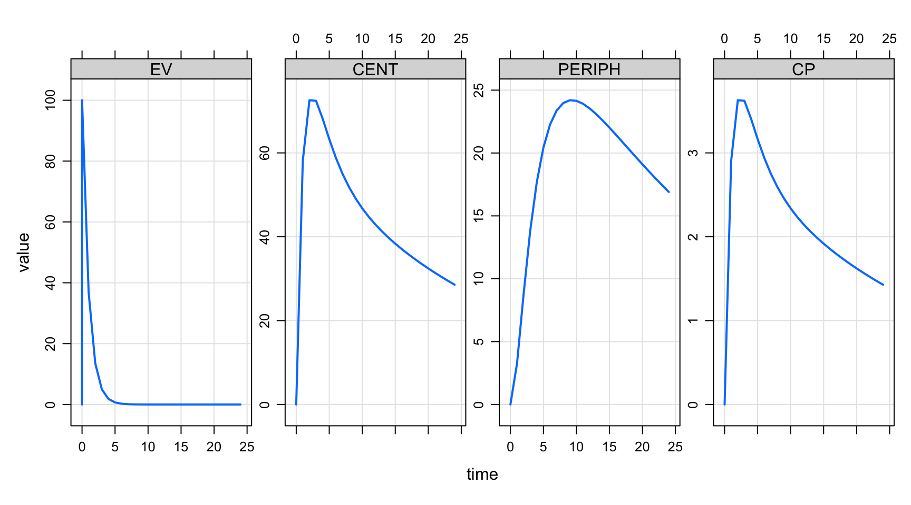
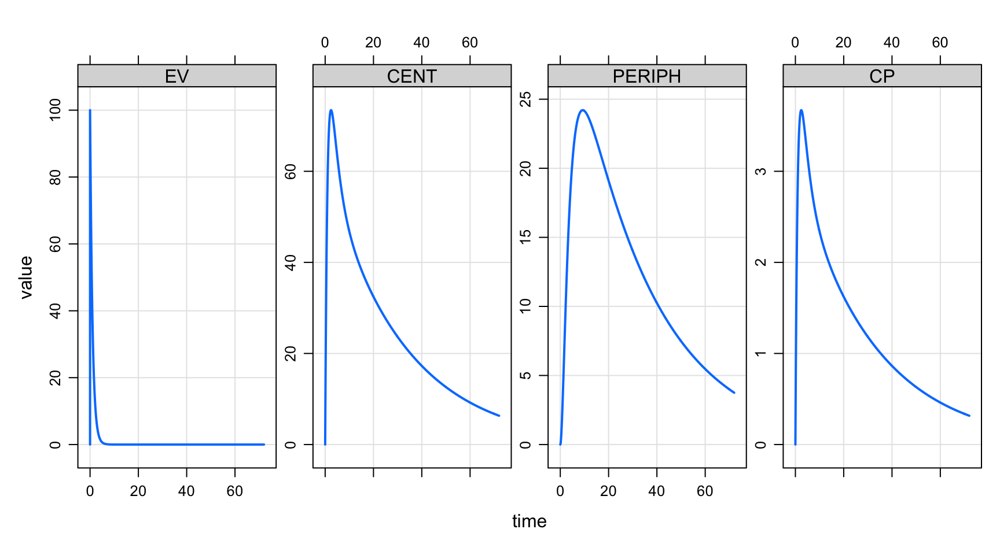
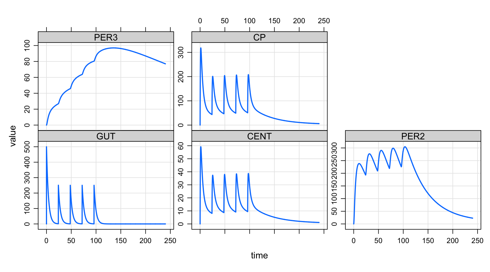
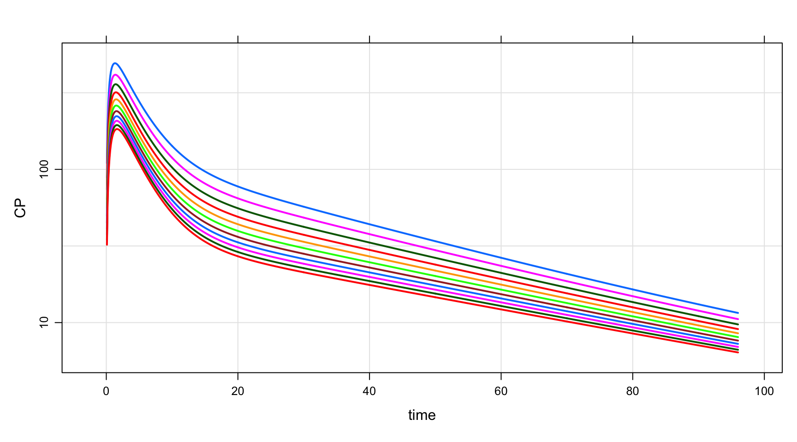
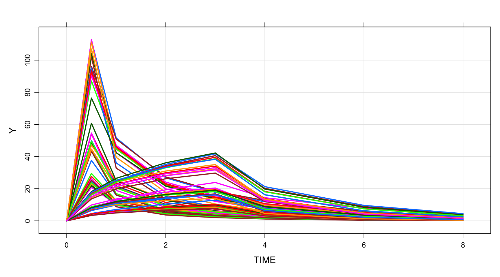
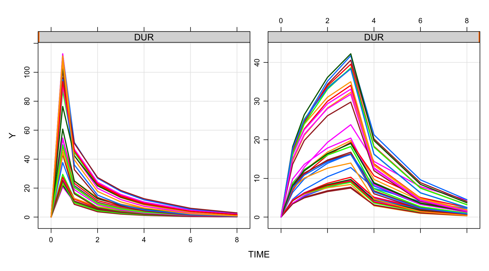
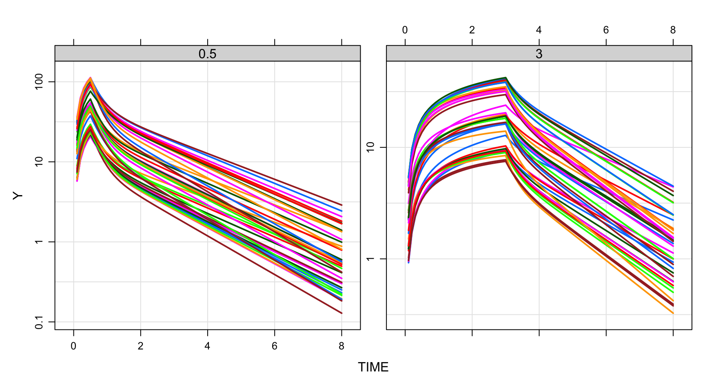

library(tidyverse)
library(mrgsolve)Get Started with mrgsolve
Scope
This document is a very brief introduction to mrgsolve basics. Please see our main portal at mrgsolve.org for more resources.
About mrgsolve
Rpackage for simulation from ODE-based models- Free, OpenSource, GitHub, CRAN
- Language
- Models written in
C++inside model specification format - General purpose solver:
ODEPACK/DLSODA(FORTRAN)- Automatically detect and switch between non-stiff (Adams) and stiff (BDF) methods for solving the differential equations
- Simulation workflow in
R
- Models written in
- Hierarchical (population) simulation
ID, \(\eta\), \(\varepsilon\)
- Integrated PK functionaility
- Bolus, infusion,
F,ALAG,SSetc, handled under the hood - 1- and 2-cmt PK models in closed-form
- Bolus, infusion,
- Extensible using
R,C++,Rcpp,boost,RcppArmadillo Ris it’s natural habitat
Background
- Motivation: large bone/mineral homeostatsis model (CaBone)
- History using
- Berkeley Madonna
- WinBUGS
- NONMEM (attempted)
- 2010: write
Rfront end todeSolve - 2012: write
C++interface toDLSODA - Develop dosing / event capability
- More recently, expose functionality provided by
Rcpp- vectors, matrices, functions, environments, random numbersboost- numerical tools inC++- users’ own
C++code (functions, data structures, classes)
- Translator from
SBMLtomrgsolveusingRbindings tolibSBML
Orientation
https://CRAN.R-project.org/package=mrgsolve
GitHub site: https://github.com/metrumresearchgroup/mrgsolve
Issues and questions: https://github.com/metrumresearchgroup/mrgsolve/issues
mrgsolve website: https://mrgsolve.github.io
User Guide: https://mrgsolve.github.io/user_guide
Blog: https://mrgsolve.github.io/blog
Vignettes: https://mrgsolve.github.io/vignettes
Compare against NONMEM: https://github.com/mrgsolve/nmtests
What we will cover today
- Three basic workflows
- Loading the model into R
- Event objects
- Data sets
Emphasis is on getting you running your own simulations today.
Three (basic) simulation workflows
- Single profile
- Batch
- Population
These aren’t entirely different, but I like to organize this way. When I’m planning an simulation, I first think “what type of output do I want?” and the answer to that question directs me on what to do next.
Single profile
This is how we load a simulation model into mrgsolve.
Load a two-compartment model from the internal library
mod <- modlib("pk2")We now have a 2-compartment PK model with which we can simulate. It is important to know how this works and we will talk in depth about this. But for now, let’s simulate some stuff.
First, we’ll just simulate from this model object (mrgsim())
mrgsim(mod). Model: pk2
. Dim: 25 x 6
. Time: 0 to 24
. ID: 1
. ID time EV CENT PERIPH CP
. 1: 1 0 0 0 0 0
. 2: 1 1 0 0 0 0
. 3: 1 2 0 0 0 0
. 4: 1 3 0 0 0 0
. 5: 1 4 0 0 0 0
. 6: 1 5 0 0 0 0
. 7: 1 6 0 0 0 0
. 8: 1 7 0 0 0 0In the output
- Essentially a data frame of simulated data
- First column
ID - Second column:
time - Next columns: compartments
- Last columns: derived quantities
- First column
Investigate the model object a bit
- overview
- parameters
- compartments
- outputs
Event object
Now, we’ll create an “event object” to simulate from. This is just a concise statement of some intervention. Like a one-liner … easy to make.
Let’s do 100 mg x1 to the first compartment, then simulate:
mod %>% ev(amt = 100) %>% mrgsim(). Model: pk2
. Dim: 26 x 6
. Time: 0 to 24
. ID: 1
. ID time EV CENT PERIPH CP
. 1: 1 0 0.0000 0.00 0.000 0.000
. 2: 1 0 100.0000 0.00 0.000 0.000
. 3: 1 1 36.7879 58.21 3.253 2.911
. 4: 1 2 13.5335 72.56 8.790 3.628
. 5: 1 3 4.9787 72.43 13.823 3.621
. 6: 1 4 1.8316 68.18 17.695 3.409
. 7: 1 5 0.6738 63.31 20.438 3.165
. 8: 1 6 0.2479 58.86 22.258 2.943We use ev() to create a set of intervention(s) for the simulation. Here, it is just a single 100 mg dose into the first compartment. The event object looks like this:
ev(amt = 100). Events:
. time amt cmt evid
. 1 0 100 1 1We have the following columns
time- whatever is your model timeamt- whatever is the mass unit for your compartmentscmtcould be number or nameevidjust like nonmem - mostly using 1
You can also use:
- rate - infusion
- ss - steady state (1 or 2)
- ii - interdose interval
- addl - additional doses
- tinf - infusion time (rather than rate)
- total - total number of doses (rather than addl)
See ?ev
Plot
Simulate 100 mg x1 again and now we pipe it to plot()
mod %>% ev(amt = 100) %>% mrgsim() %>% plot()
Control time span of the simulation
I would like this to look a little nicer.
- 100 mg x1
- Run the end of the simulation out to 72 hours with delta 0.1
- Make the line smoother
- Plot the result
mod %>% ev(amt = 100) %>% mrgsim(end = 72, delta = 0.1) %>% plot()
We can make this change permanent
- end: 72 hours
- delta: 0.1 hours
mod2 <- update(mod, end = 72, delta = 0.1)More-complicated events
We said that the event objects were simple. But we can combine them to make more complicated sequences.
Let’s load a PK model for azithromycin (azithro-single):
mod <- mread("azithro-single", project = "model")Check out the model
mod.
.
. ------------ source: azithro-single.cpp ------------
.
. project: /Users/kyleb/git.../basics/model
. shared object: azithro-single-so-1485d5d385f3c
.
. time: start: 0 end: 240 delta: 0.1
. add: <none>
.
. compartments: GUT CENT PER2 PER3 [4]
. parameters: TVCL TVV1 TVQ2 TVV2 Q3 V3 KA WT [8]
. captures: CP [1]
. omega: 0x0
. sigma: 0x0
.
. solver: atol: 1e-08 rtol: 1e-08 maxsteps: 20k
. ------------------------------------------------------Create an event object to implement the z-pak dose:
- 500 mg po on day 1 (
load) - 250 mg po daily on days 2 through 5 (
continue)
load <- ev(amt = 500)
continue <- ev(amt = 250, ii = 24, addl = 3, time = 24)
zpak <- c(load, continue)Look at the zpak dosing object
zpak. Events:
. time amt cmt evid ii addl
. 1 0 500 1 1 0 0
. 2 24 250 1 1 24 3We can also accompilsh this just with 250 mg tablets
zpak <- c(ev(amt = 250), ev(amt = 250, ii = 24, addl = 4))
zpak. Events:
. time amt cmt evid ii addl
. 1 0 250 1 1 0 0
. 2 0 250 1 1 24 4Now, simulate and plot from the zpak event object
mrgsim(mod, zpak) %>% plot()
Event sequence
- 100 mg daily x 7 then
- 50 mg BID x7
Batch
Let’s use our fixed-effects azithromycin model to look at how weight affects PK. We’ll use that zpak object that we created in the previous section.
Create an idata set
Now, let’s make a data frame that contains the weights that we want to investigate (from 40 kg to 140 kg by 10 kg).
wt <- tibble(WT = seq(40, 140, 10))
head(wt). # A tibble: 6 × 1
. WT
. <dbl>
. 1 40
. 2 50
. 3 60
. 4 70
. 5 80
. 6 90IMPORTANT: the key here is that we have WT as a column in the data set and we have WT as a parameter in the model (look at the parameters)
param(mod).
. Model parameters (N=8):
. name value . name value
. KA 0.259 | TVV1 186
. Q3 10.6 | TVV2 2890
. TVCL 100 | V3 2610
. TVQ2 180 | WT 70When we make the names agree, mrgsolve will update the WT parameter as the simulation advances across individuals.
Simulate with event object
Now we can pass this set of weights into the problem as “idata”. We will use just the first record from the zpak dosing object.
- Load the
azithro-singlemodel - Create a dosing event with 500 mg x1
- Simulate with
idata - End the simulation at 96 hours
mod <- mread("azithro-single", project = "model")
load <- ev(amt = 500)
out <- mrgsim(mod, events = load, idata = wt, end = 96)Take a quick look at the output (head)
out. Model: azithro-single
. Dim: 10582 x 7
. Time: 0 to 96
. ID: 11
. ID time GUT CENT PER2 PER3 CP
. 1: 1 0.0 0.0 0.00 0.0000 0.00000 0.0
. 2: 1 0.0 500.0 0.00 0.0000 0.00000 0.0
. 3: 1 0.1 487.2 11.68 0.6712 0.06027 109.9
. 4: 1 0.2 474.8 21.11 2.5042 0.22543 198.6
. 5: 1 0.3 462.6 28.69 5.2643 0.47505 270.0
. 6: 1 0.4 450.8 34.74 8.7577 0.79227 326.9
. 7: 1 0.5 439.3 39.53 12.8247 1.16317 371.9
. 8: 1 0.6 428.0 43.27 17.3336 1.57628 407.1Plot the ouptut, looking only at CP and on log scale
plot(out, CP ~ time, logy = TRUE)
This idata set functionality is typically used with an event object (as we have here) but isn’t required.
Population
The last workflow I’m calling “population”. Here, population just refers to the input data set.
We can have a data frame that contains many individuals with all different types of dosing interventions. This is just like the data set that you use to do your NONMEM run.
Read a NMTRAN like data set
Meropenem PopPK http://repository.ddmore.foundation/model/DDMODEL00000213
For example, read in data/meropenem.csv
data <- readr::read_csv("data/meropenem.csv", na = '.')- glimpse the data (
head) - count
EVID,DUR,AMT - number of IDs
head(data). # A tibble: 6 × 13
. ID TIME GROUP DV MDV EVID AMT RATE AGE WT CLCR CMT DUR
. <dbl> <dbl> <dbl> <dbl> <dbl> <dbl> <dbl> <dbl> <dbl> <dbl> <dbl> <dbl> <dbl>
. 1 1 0 1 NA 1 1 500 1000 29.7 63.8 83 1 0.5
. 2 1 0.5 1 31.1 NA 0 NA 0 29.7 63.8 83 0 0.5
. 3 1 1 1 11.2 NA 0 NA 0 29.7 63.8 83 0 0.5
. 4 1 2 1 6.21 NA 0 NA 0 29.7 63.8 83 0 0.5
. 5 1 3 1 4.00 NA 0 NA 0 29.7 63.8 83 0 0.5
. 6 1 4 1 2.33 NA 0 NA 0 29.7 63.8 83 0 0.5count(data, EVID, DUR, AMT). # A tibble: 8 × 4
. EVID DUR AMT n
. <dbl> <dbl> <dbl> <int>
. 1 0 0.5 NA 280
. 2 0 3 NA 273
. 3 1 0.5 500 14
. 4 1 0.5 1000 13
. 5 1 0.5 2000 13
. 6 1 3 500 13
. 7 1 3 1000 13
. 8 1 3 2000 13length(unique(data$ID)). [1] 79Now, load the meropenem model (meropenem_pk.cpp, in the model directory)
mod <- mread("meropenem_pk", project = "model")And simulate with mod and data
out <- mrgsim(mod, data)Then plot using Y output
plot(out, Y ~ TIME)
Resimulate and plot by duration
out <- mrgsim(mod, data, carry_out = "DUR")Plot Y versus TIME by DUR
plot(out, Y ~ TIME | DUR)
Recall that we have both observations and doses in the data set (as usual for your NONMEM data set)
Count EVID in data
count(data, EVID). # A tibble: 2 × 2
. EVID n
. <dbl> <int>
. 1 0 553
. 2 1 79When mrgsolve finds records with EVID=0 in the data set, it will assume that you have specified every time that you want a simulated value in the data set. In other words the design of the simulated output will match the design of the input data:
Check dim() in data and out:
dim(data) . [1] 632 13dim(out). [1] 632 5Let’s look to see what happens when we don’t include any observation records in the input data:
Filter into doses:
doses <- filter(data, EVID==1)Now we still have the same number of people, with different doses and infusion times.
Check unique ID and count EVID, AMT, and DUR
length(unique(doses$ID)). [1] 79count(doses, EVID, AMT, DUR). # A tibble: 6 × 4
. EVID AMT DUR n
. <dbl> <dbl> <dbl> <int>
. 1 1 500 0.5 14
. 2 1 500 3 13
. 3 1 1000 0.5 13
. 4 1 1000 3 13
. 5 1 2000 0.5 13
. 6 1 2000 3 13- Simulate from this sparse data set; end = 8 hours
- Get
DURin to the output - Plot
log(Y)versustimebyDUR
mod %>%
mrgsim(doses, carry_out = "DUR", end = 8) %>%
plot(Y~TIME|factor(DUR), logy=TRUE)
The principle is: when mrgsolve does NOT find any observation records, it will fill them in for you according to the time grid that we looked at previously.
This can be very helpful in reducing the data assembly burden when running your simulations.
Some other ways to create population inputs
expand.ev()makes all combinations of your inputs- Sensible defaults are provided
time,cmt,evid
data <- expand.ev(amt = c(100, 300, 1000), ii = c(12, 24))
data. ID time amt ii cmt evid
. 1 1 0 100 12 1 1
. 2 2 0 300 12 1 1
. 3 3 0 1000 12 1 1
. 4 4 0 100 24 1 1
. 5 5 0 300 24 1 1
. 6 6 0 1000 24 1 1as_data_set()takes event objects and creates a data frame / set- 100 mg and 300 mg doses daily x7
- 20 individuals each
data <- as_data_set(
ev(amt = 100, ii = 24, total = 7, ID = 1:20),
ev(amt = 300, ii = 24, total = 7, ID = 1:20)
)Get work done
Work with output
names()summary()head()$
mod <- modlib("pk1")
out <- mrgsim(mod)
names(out). [1] "ID" "time" "EV" "CENT" "CP"summary(out). ID time EV CENT CP
. Min. :1 Min. : 0 Min. :0 Min. :0 Min. :0
. 1st Qu.:1 1st Qu.: 6 1st Qu.:0 1st Qu.:0 1st Qu.:0
. Median :1 Median :12 Median :0 Median :0 Median :0
. Mean :1 Mean :12 Mean :0 Mean :0 Mean :0
. 3rd Qu.:1 3rd Qu.:18 3rd Qu.:0 3rd Qu.:0 3rd Qu.:0
. Max. :1 Max. :24 Max. :0 Max. :0 Max. :0head(out). ID time EV CENT CP
. 1 1 0 0 0 0
. 2 1 1 0 0 0
. 3 1 2 0 0 0
. 4 1 3 0 0 0
. 5 1 4 0 0 0
. 6 1 5 0 0 0out$time[1:5]. [1] 0 1 2 3 4Coerce output
- data.frame
- tibble
- matrix
out <- mrgsim(mod)
class(out). [1] "mrgsims"
. attr(,"package")
. [1] "mrgsolve"as_tibble(out). # A tibble: 25 × 5
. ID time EV CENT CP
. <dbl> <dbl> <dbl> <dbl> <dbl>
. 1 1 0 0 0 0
. 2 1 1 0 0 0
. 3 1 2 0 0 0
. 4 1 3 0 0 0
. 5 1 4 0 0 0
. 6 1 5 0 0 0
. 7 1 6 0 0 0
. 8 1 7 0 0 0
. 9 1 8 0 0 0
. 10 1 9 0 0 0
. # … with 15 more rowsCorerce via dplyr verbs
- Simulate and pipe the output to
mutate()
out <- mrgsim(mod) %>% mutate(name = "kyle")
class(out). [1] "tbl_df" "tbl" "data.frame"head(out). # A tibble: 6 × 6
. ID time EV CENT CP name
. <dbl> <dbl> <dbl> <dbl> <dbl> <chr>
. 1 1 0 0 0 0 kyle
. 2 1 1 0 0 0 kyle
. 3 1 2 0 0 0 kyle
. 4 1 3 0 0 0 kyle
. 5 1 4 0 0 0 kyle
. 6 1 5 0 0 0 kyleReturn data frame
- Use
outputargument
out <- mrgsim(mod, output = "df")
class(out). [1] "data.frame"- Use
mrgsim_df()
out <- mrgsim_df(mod)
class(out). [1] "data.frame"Carry-Out
- 100 mg x1
- need
dosein the output - contrast that with getting
amtin the output
First create the event
e <- ev(amt = 100, dose = amt)
e. Events:
. time amt cmt evid dose
. 1 0 100 1 1 100Then recover dose
mrgsim(mod, events = e, carry_out = "dose"). Model: pk1
. Dim: 26 x 6
. Time: 0 to 24
. ID: 1
. ID time dose EV CENT CP
. 1: 1 0 100 0.0000 0.00 0.000
. 2: 1 0 100 100.0000 0.00 0.000
. 3: 1 1 100 36.7879 61.41 3.070
. 4: 1 2 100 13.5335 81.00 4.050
. 5: 1 3 100 4.9787 85.36 4.268
. 6: 1 4 100 1.8316 84.25 4.213
. 7: 1 5 100 0.6738 81.27 4.063
. 8: 1 6 100 0.2479 77.72 3.886Recover
dose: 100 mgtrt: 100 mg x1- need
doseandtrtin the output
First, create the event
e <- ev(amt = 100, trt = "100 mg x1", dose = amt)
e. Events:
. time amt cmt evid trt dose
. 1 0 100 1 1 100 mg x1 100Then simulate and recover trt and amt
mrgsim(mod, events = e, recover = "trt,amt"). Model: pk1
. Dim: 26 x 7
. Time: 0 to 24
. ID: 1
. ID time EV CENT CP trt amt
. 1: 1 0 0.0000 0.00 0.000 100 mg x1 100
. 2: 1 0 100.0000 0.00 0.000 100 mg x1 100
. 3: 1 1 36.7879 61.41 3.070 100 mg x1 100
. 4: 1 2 13.5335 81.00 4.050 100 mg x1 100
. 5: 1 3 4.9787 85.36 4.268 100 mg x1 100
. 6: 1 4 1.8316 84.25 4.213 100 mg x1 100
. 7: 1 5 0.6738 81.27 4.063 100 mg x1 100
. 8: 1 6 0.2479 77.72 3.886 100 mg x1 100